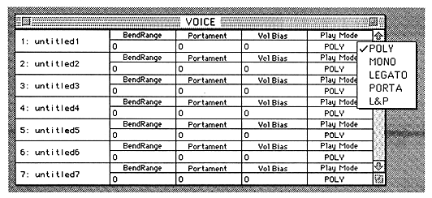
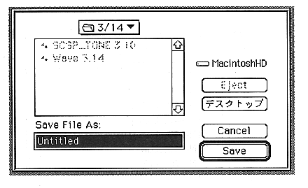
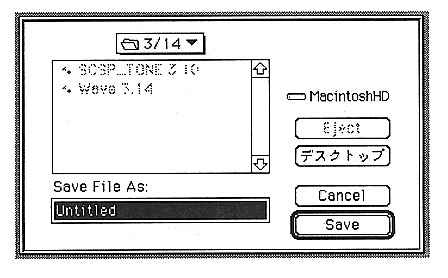

Return to previous page ｜ Return to menu ｜ Go to next page

●Save
- Saves the current SCSP file.

●Save As
- Save the current file as another SCSP file with a different name. The following screen will open.

Return to previous page ｜ Return to menu ｜ Go to next page